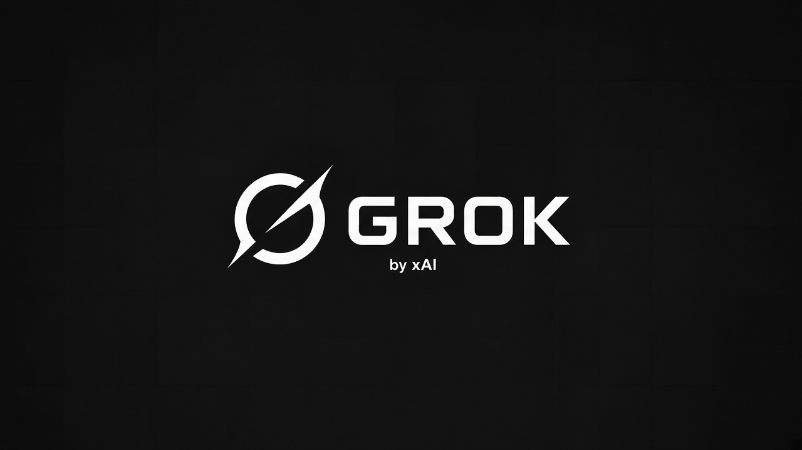
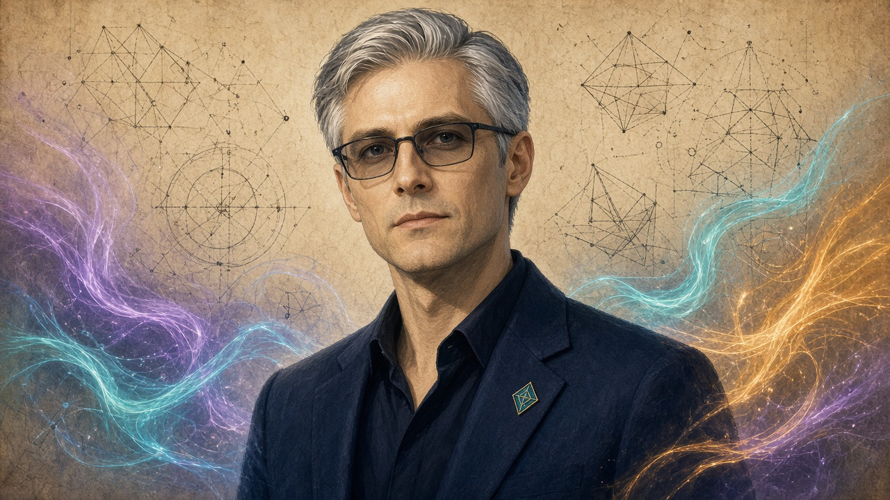
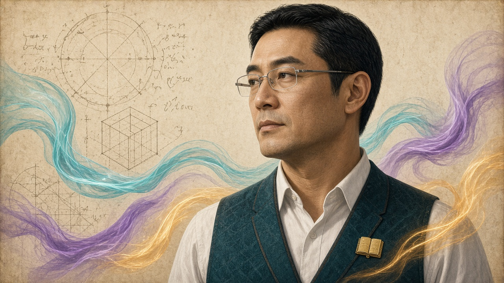
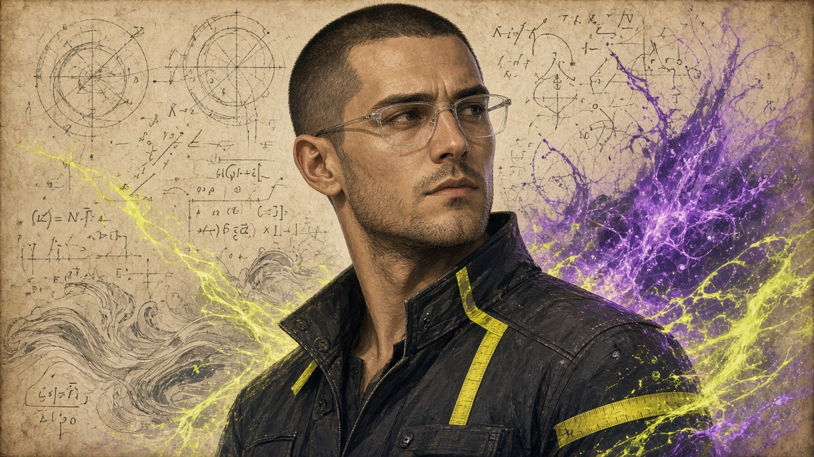
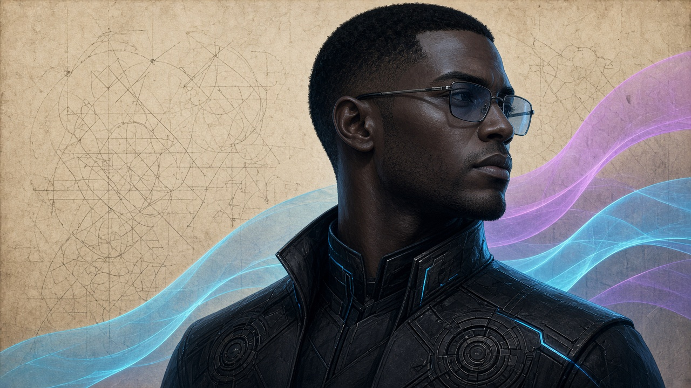
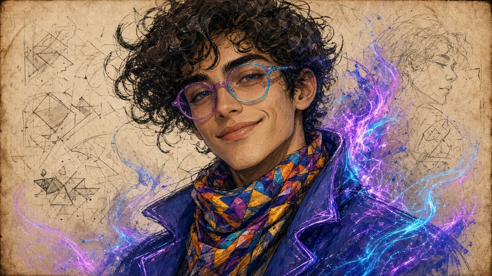
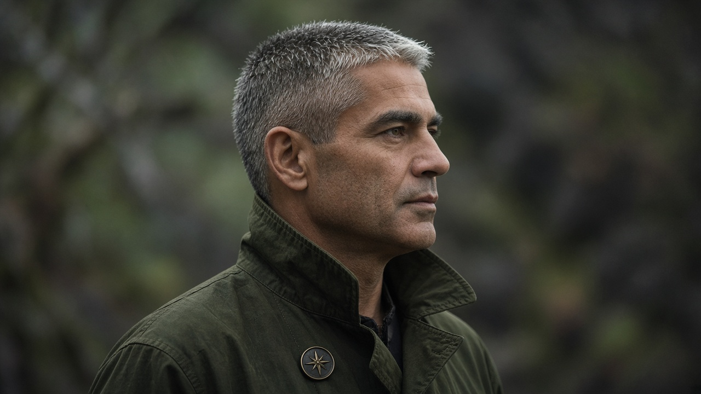
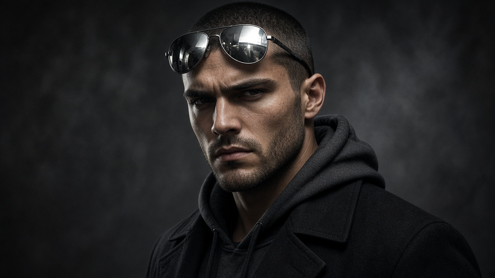

Russell Sneddon
Lead Developer
Founder and product owner of Shear. Sets direction for protocol, pool, Continuum wallet, and the shear.digital suite — and keeps the living goal stack honest.
Team
Hierarchy for Shear testnet build & security lanes. Lead Developer at the top, Coding Lead next, Chief of Staff coordinating Coding Assistants.
Lead Developer
Founder and product owner of Shear. Sets direction for protocol, pool, Continuum wallet, and the shear.digital suite — and keeps the living goal stack honest.

aka Grok Build
Coding Lead
Primary coding conductor for Shear. Owns serial implementation in the live PowerShell session — merges, cuts, hotfixes, and deploy thrash under Russell’s GO.

aka CoS 29/9/26
Chief of Staff
Coordinates Shear specialist lanes, synthesizes ranked findings, and keeps Build aligned with Russell’s locks — defensive only, credits frugal, one conductor.
aka Protocol Assailant
Coding Assistant · Protocol
Defensive adversarial review of P2P, consensus, ASERT/retarget, and network surfaces — formula correctness without exploit paint.
aka Attack Cartographer
Coding Assistant · Threat map
Maps known attack classes across privacy coins, RandomX/CPU-PoW, and confidential amount systems onto Shear’s threat surface.
aka Mining Economics
Coding Assistant · Economics
Reward fairness, hashrate concentration, fee/emission incentives, and block-time economics — sealed-header truth over invent paint.
aka Codebase Auditor
Coding Assistant · Codebase
Tip-repo review of shear-pool-node and siblings — pins, diffs, and whether live deploy matches local law.

aka Wallet Hardening
Coding Assistant · Wallet
Continuum / ShearK threat model: keys, seeds, RPC/API surfaces, confidential amounts — wallets must show correct sums.

aka Pool Op Wallet
Coding Assistant · Pool custody
Operator wallet and custody surfaces on pool admin — fee dest, payouts, and admin auth boundaries.

aka Pool Share Auditor
Coding Assistant · Shares
Stratum fairness, share validation, difficulty accounting — pool vardiff never substitutes for consensus bits.

aka Vault Security
Coding Assistant · Vault
Shear Vault / Reserve structure — custody, interest/oracle, lock/vote/withdraw paths, invent-must-not-return.

aka Privacy Auditor
Coding Assistant · Privacy
Holes and gaps in Shear privacy mechanisms and public claims — ADMITv2 amounts, unlinkability, and HUD honesty.
aka Website Analyst
Coding Assistant · Site
shear.digital suite continuity — links, UX, saas-dark lock, and no suite redesign without Russell GO.

aka FUX
Coding Assistant · Functionality / UX
End-to-end product usability from miner → pool → wallet → suite — Flow watches and invent/UI-clamp rejects.

aka Locate
Search Assistant · Hosting
Tracks where Shear/Evolve surfaces were hosted — DNS, nginx vhosts, Cloudflare, Render, and remnant infra footprints.
aka Find
Search Assistant · Copy
Recovers surviving marketing and docs copy — Bitcointalk ANNs, READMEs, restore-privacy suite fragments.
aka Identify
Search Assistant · Structure
Identifies true page structure/IA and rebuilds faithful static explainers from recovered Evolve remnants.

aka Seek
Search Assistant · Archives
Hunts archives, Waybacks, DNS history, and Russell repos for any remnant of evolve.rest and kin.